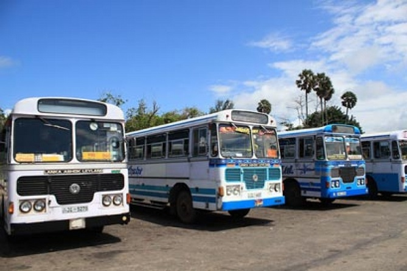
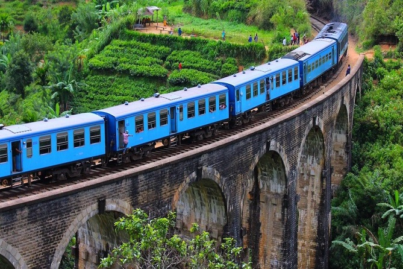
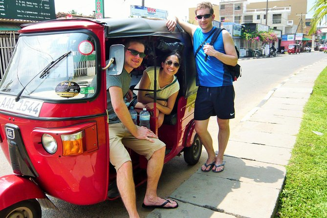
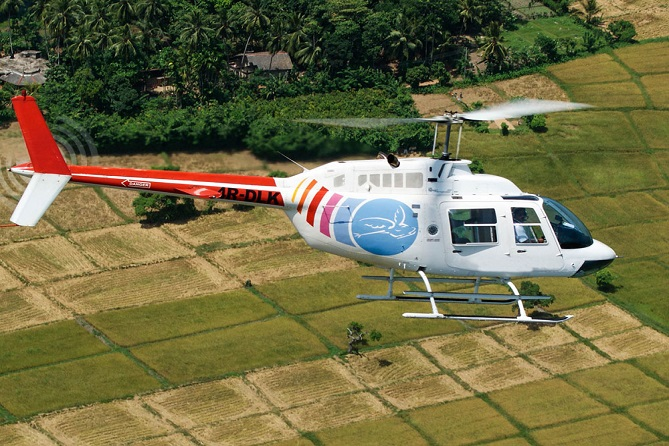

Public transportation in Sri Lanka is mainly based on the road network which is centered around the capital city of Colombo.
Buses, three-wheelers and trains make up the public transport system.
Airports, harbors and waterways are also available for those who need to travel further afield.
Most of the roads in Sri Lanka are well maintained; however some rural areas may have less developed roads that can be difficult to traverse at times.
When visiting Sri Lanka, there are several different types of transportation options you can consider depending on your needs:
buses provide an affordable way to get around while three wheelers offer more flexibility when it comes to navigating narrow streets or tight corners;
train services cover long distances with relative ease but require prior planning due their limited schedules;
airports provide access both domestically as well as internationally while harbors give travelers access by sea if they wish explore coastal towns or islands nearby;
lastly waterway routes such as ferries allow passengers easy passage between two points separated by bodies of water like rivers or lakes - this option might prove useful for tourists looking for unique experiences during their stay in Sri Lanka!
Overall, public transportation in Sri Lanka provides visitors with plenty of options when it comes time to exploring this beautiful country – from buses and trains covering vast expanses across land all way down ports giving travelers direct access via sea –
these various means ensure that no matter what type experience you’re looking for during your trip here will be able find something suitable! With so much diversity within its transport infrastructure ,Sri lanka has become increasingly popular destination among tourists worldwide .

Traveling around the country just got easier and more affordable! With a wide network of buses, you can get almost anywhere for the lowest cost.

Explore the beauty of Sri Lanka's hill country from a unique perspective –
by taking the train! Enjoy picturesque views and learn about the history of British rule as you travel through this intensive railway network
Renting a car has never been easier! With the availability of cars for rent with or without a driver, you don't have to worry about finding the perfect place that rents cars.
Most hotels provide this service so you can just show up and get on your way in no time.

Three-wheelers may not be as comfortable as taxis, but they definitely get the job done! Plus, Three-wheelers are also cheaper when compared to taxis.
Whether you're in a big city or small town, three-wheelers are always around and ready for your next ride.

Helicopter rides are a popular activity among tourists, despite their hefty price tag. Although they may be expensive, many people find the experience to be worth it.
From soaring above cities and landscapes to witnessing breathtaking views of nature from high in the sky, helicopter rides offer an unforgettable experience that is hard to replicate any other way.